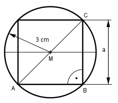

Pythagoras Aufgabe 74 Berechnen Sie die Fläche A des einbeschriebenen Quadrates in cm2.  Satz von Pythagoras im Dreieck ABC: AC = 2 * 3 cm = 6 cm a2 + a2 = AC2 2a2 = 62 2a2 = 36 |:2 a2 = 18 cm2 = A
Pythagoras Aufgabe 74 Berechnen Sie die Fläche A des einbeschriebenen Quadrates in cm2.
